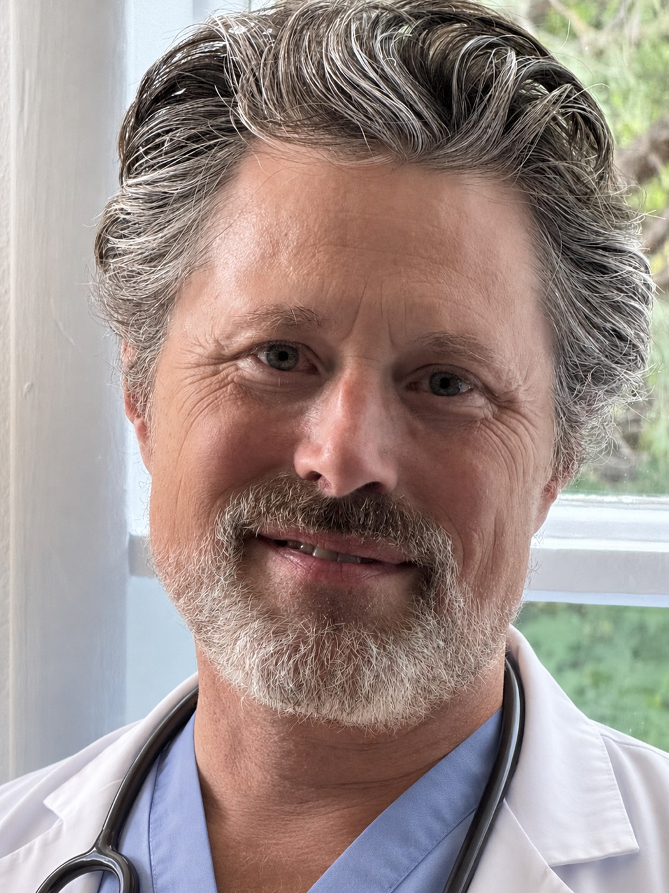

Root-cause medicine · Coeur d'Alene, Idaho
Most medicine manages symptoms. Dr. Dane Mosher, DO works upstream — testing how your cells actually produce energy, finding what's interfering, and repairing the system at its root.

Every protocol starts with the same question — not "what drug matches this symptom," but "what is actually breaking down, and why." The practice is built on four pillars.
Fatigue isn't a personality trait — it's a cellular signal. We look at how your mitochondria are producing energy, and what's draining the battery.
Objective measurement of cellular energy production, so treatment targets what the data shows — not a guess.
Removing what interferes — toxins, hidden stressors, immune triggers — and giving the body what it needs to rebuild itself.
"Normal labs" is a low bar. The goal is function: better energy, sharper cognition, deeper resilience — measurably, over time.
A functional and environmental medicine practice draws on a wider set of instruments than a standard clinic. These are the ones Dr. Mosher reaches for.
The physician
At fifteen, Dane Mosher read Life Extension by Durk Pearson and Sandy Shaw — and came away with an idea that has driven his entire career: health isn't something that happens to you. It's something you can measure, understand, and engineer.
That conviction carried him through a Family Medicine residency at East Tennessee State University, into functional medicine certification through the Institute for Functional Medicine, and onto the board of the American Academy of Environmental Medicine. Since 2011 he has served the autism community through The Johnson Center for Child Health and Development in Austin, Texas, applying functional medicine where conventional approaches had run out of answers.
"I aim to be the physician I would choose for myself."
That's the standard behind Performance Specialty Medicine: your health is very much under your control — connected to diet, lifestyle, nutrition, and environment. Dr. Mosher's job is to give you the data, the tools, and a clear plan to take it back.
Start here
The practice is located inside The Collective in Coeur d'Alene. Call to schedule an initial consultation.
Call (208) 254-1986